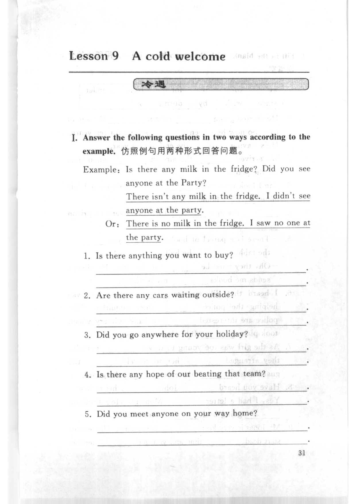
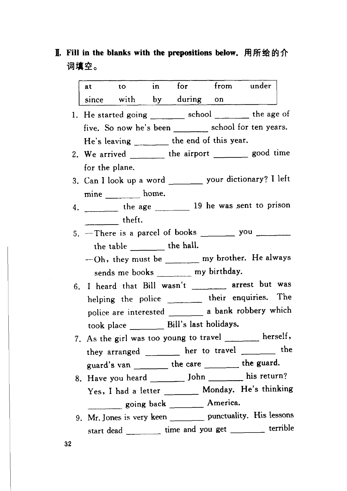
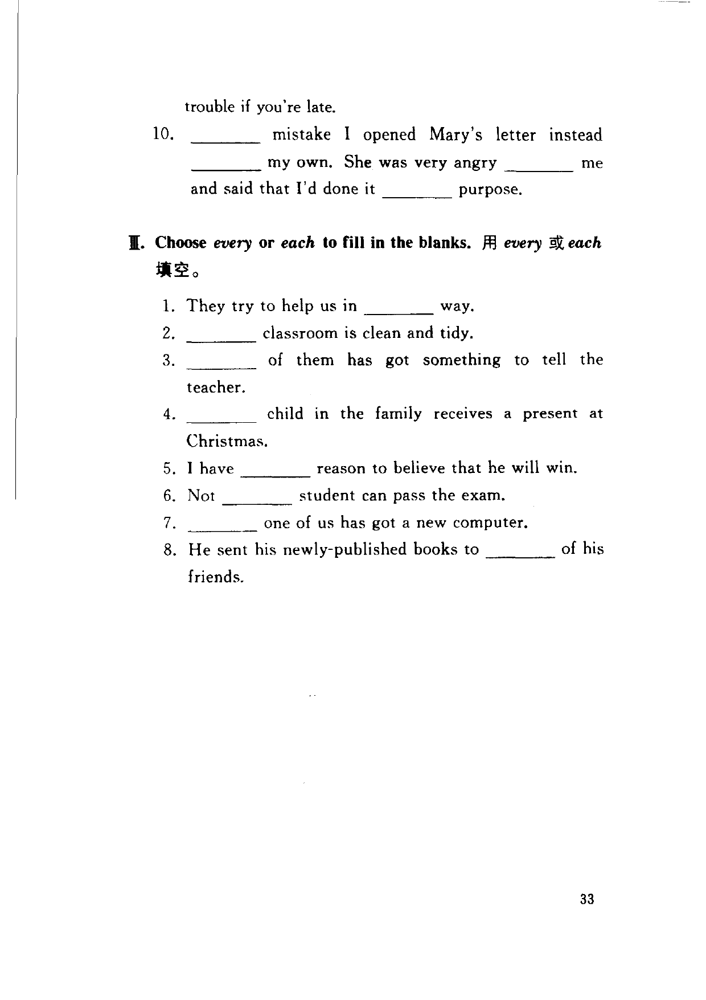

Grammar exercises · 语法练习
I. Answer the following questions in two ways according to the example.
仿照例句用两种形式回答问题。
Example · 例句
Is there any milk in the fridge? Did you see anyone at the Party?
There isn't any milk in the fridge. I didn't see anyone at the party.
Or: There is no milk in the fridge. I saw no one at the party.
-
I. Two ways — Is there anything you want to buy?
(answer in two ways) -
I. Two ways — Are there any cars waiting outside?
(answer in two ways) -
I. Two ways — Did you go anywhere for your holiday?
(answer in two ways) -
I. Two ways — Is there any hope of our beating that team?
(answer in two ways) -
I. Two ways — Did you meet anyone on your way home?
(answer in two ways)
II. Fill in the blanks with the prepositions below.
用所给的介词填空。
at · to · in · for · from · under · since · with · by · during · on
-
II. Prepositions — He started going school the age of five. So now he's been school for ten years. He's leaving the end of this year.
-
II. Prepositions — We arrived the airport good time for the plane.
-
II. Prepositions — Can I look up a word your dictionary? I left mine home.
-
II. Prepositions — the age 19 he was sent to prison theft.
-
II. Prepositions — —There is a parcel of books you the table the hall.
—Oh, they must be my brother. He always sends me books my birthday. -
II. Prepositions — I heard that Bill wasn't arrest but was helping the police their enquiries. The police are interested a bank robbery which took place Bill's last holidays.
-
II. Prepositions — As the girl was too young to travel herself, they arranged her to travel the guard's van the care the guard.
-
II. Prepositions — Have you heard John his return? Yes, I had a letter Monday. He's thinking going back America.
-
II. Prepositions — Mr. Jones is very keen punctuality. His lessons start dead time and you get terrible trouble if you're late.
-
II. Prepositions — mistake I opened Mary's letter instead my own. She was very angry me and said that I'd done it purpose.
III. Choose every or each to fill in the blanks.
用 every 或 each 填空。
-
III. every/each — They try to help us in way.
-
III. every/each — classroom is clean and tidy.
-
III. every/each — of them has got something to tell the teacher.
-
III. every/each — child in the family receives a present at Christmas.
-
III. every/each — I have reason to believe that he will win.
-
III. every/each — Not student can pass the exam.
-
III. every/each — one of us has got a new computer.
-
III. every/each — He sent his newly-published books to of his friends.
Original images · 原图对照
Expand a page to compare it with the transcription. Open the original in a new tab to zoom in.
展开原图核对文字，也可以在新标签页打开原图放大查看。
Book page 1 · Exercise I (answer in two ways, items 1–5)
Open original · 打开原图 ↗ Download original · 下载原图


Book page 2 · Exercise II (prepositions, items 1–9 start)
Open original · 打开原图 ↗ Download original · 下载原图


Book page 3 · Exercise II (item 10) and Exercise III (every/each, items 1–8)
Open original · 打开原图 ↗ Download original · 下载原图


Your notes and answers
Use this space for longer responses or exercises that do not have an individual answer box.